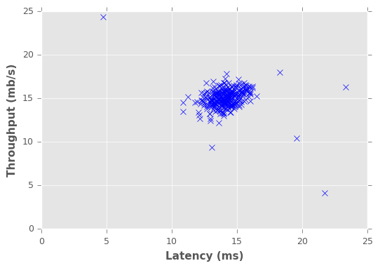
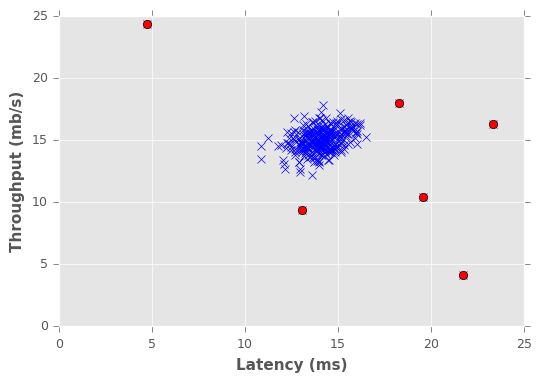

Anomaly detection is the problem of identifying data points that don't conform to expected (normal) behaviour. Unexpected data points are also known as outliers and exceptions etc. Anomaly detection has crucial significance in the wide variety of domains as it provides critical and actionable information. For example, an anomaly in MRI image scan could be an indication of the malignant tumour or anomalous reading from production plant sensor may indicate faulty component.
Simply, anomaly detection is the task of defining a boundary around normal data points so that they can be distinguishable from outliers. But several different factors make this notion of defining normality very challenging. E.g. normal behaviour usually evolve in certain domains and the notion that is considered normal in the present could change in future. Moreover, defining the normal region which separates outliers from normal data points is not straightforward in itself.
In this tutorial, we will implement anomaly detection algorithm (in Python) to detect outliers in computer servers. To keep things simple we will use two features 1) throughput in mb/s and 2) latency in ms of response for each server. The Gaussian model will be used to learn an underlying pattern of the dataset with the hope that our features follow the gaussian distribution. After that, we will find data points with very low probabilities of being normal and hence can be considered outliers. For training set, we will first learn the gaussian distribution of each feature for which mean and variance of features are required. Numpy provides the method to calculate both mean and variance (covariance matrix) efficiently. Similarly, Scipy library provide method to estimate gaussian distribution.
Let's get started! By first importing requried libraries and defining functions for reading data, mean normalizing features and estimating gaussian distribution.
import matplotlib.pyplot as plt
import numpy as np
%matplotlib inline
from numpy import genfromtxt
from scipy.stats import multivariate_normal
from sklearn.metrics import f1_scoredef read_dataset(filePath,delimiter=','):
return genfromtxt(filePath, delimiter=delimiter)
def feature_normalize(dataset):
mu = np.mean(dataset,axis=0)
sigma = np.std(dataset,axis=0)
return (dataset - mu)/sigma
def estimateGaussian(dataset):
mu = np.mean(dataset, axis=0)
sigma = np.cov(dataset.T)
return mu, sigma
def multivariateGaussian(dataset,mu,sigma):
p = multivariate_normal(mean=mu, cov=sigma)
return p.pdf(dataset)Next, define a function to find the optimal value for threshold (epsilon) that can be used to differentiate between normal and anomalous data points. For learning the optimal value of epsilon we will try different values in a range of learned probabilities on a cross-validation set. The f-score will be calculated for predicted anomalies based on the ground truth data available. The epsilon value with highest f-score will be selected as threshold i.e. the probabilities that lie below the selected threshold will be considered anomalous.
def selectThresholdByCV(probs,gt):
best_epsilon = 0
best_f1 = 0
f = 0
stepsize = (max(probs) - min(probs)) / 1000;
epsilons = np.arange(min(probs),max(probs),stepsize)
for epsilon in np.nditer(epsilons):
predictions = (probs < epsilon)
f = f1_score(gt, predictions, average = "binary")
if f > best_f1:
best_f1 = f
best_epsilon = epsilon
return best_f1, best_epsilonWe have all the required pieces, next let's call above defined functions to find anomalies in the dataset. Also, as we are dealing with only two features here, plotting helps us visualize the anomalous data points.
tr_data = read_dataset('tr_server_data.csv')
cv_data = read_dataset('cv_server_data.csv')
gt_data = read_dataset('gt_server_data.csv')
n_training_samples = tr_data.shape[0]
n_dim = tr_data.shape[1]
plt.figure()
plt.xlabel("Latency (ms)")
plt.ylabel("Throughput (mb/s)")
plt.plot(tr_data[:,0],tr_data[:,1],"bx")
plt.show()
mu, sigma = estimateGaussian(tr_data)
p = multivariateGaussian(tr_data,mu,sigma)
p_cv = multivariateGaussian(cv_data,mu,sigma)
fscore, ep = selectThresholdByCV(p_cv,gt_data)
outliers = np.asarray(np.where(p < ep))
plt.figure()
plt.xlabel("Latency (ms)")
plt.ylabel("Throughput (mb/s)")
plt.plot(tr_data[:,0],tr_data[:,1],"bx") plt.plot(tr_data[outliers,0],tr_data[outliers,1],"ro")
plt.show()
We implemented a very simple anomaly detection algorithm. To gain more in-depth knowledge, please consult following resource:Chandola, Varun, Arindam Banerjee, and Vipin Kumar. "Anomaly detection: A survey." ACM computing surveys (CSUR) 41.3 (2009): 15.
The complete code (Python notebook) and the dataset is available at the followinglink.
Last Updated: 24/1/2017